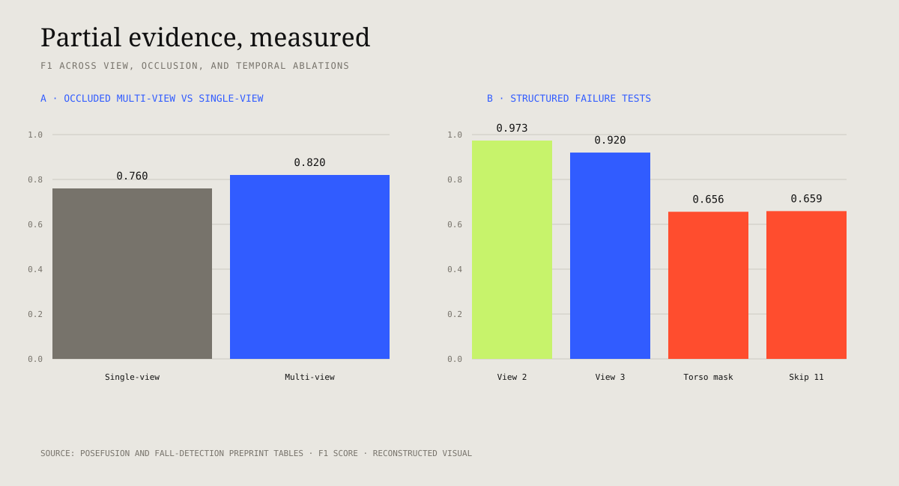

Transformer only
Pose features enter temporal self-attention directly, establishing whether sequence modeling alone captures enough structure.
Multimodal perception · 2023
Can pose-based action models remain informative when the viewpoint changes or important parts of the body disappear?
Two connected studies examine the same representation problem at different scales. PoseFusion preserves each camera view long enough to aggregate complementary evidence. The fall-recognition study isolates what spatial graphs, camera viewpoint, body-region occlusion, and temporal sampling contribute to a binary safety-relevant decision.
Research premise
Humans rarely discard every useful observation because one view is blocked. These studies test whether a learned representation can also preserve incomplete, source-specific evidence before combining it through time.

PoseFusion
The system does not flatten all cameras into a single raw tensor. Each view is first represented as a sequence of skeletal graphs. Spatial encoders preserve joint topology; an aggregation module combines view embeddings; a transformer then models the action over time.
Structured joint groups are masked in selected views to simulate partial evidence rather than random independent dropout. The multi-view loader then pairs complementary views so the aggregation mechanism can be tested under controlled corruption.
The repository exposes both single-view and multi-view model paths, dataset preprocessing, occlusion augmentation, training, validation, and test loaders.
PoseFusion results
The clean single-view case remains strong. Multi-view aggregation earns its complexity under occlusion—and the aggregation strategy matters.
| Aggregator | Class F1 | Class precision | Class recall | Accuracy |
|---|---|---|---|---|
| Mean | 0.72 · 0.78 · 0.84 | 0.61 · 1.00 · 0.84 | 0.86 · 0.64 · 0.84 | 0.79 |
| Linear | 0.72 · 0.86 · 0.88 | 0.61 · 1.00 · 0.91 | 0.86 · 0.76 · 0.84 | 0.82 |
| Attention | 0.66 · 0.90 · 0.84 | 0.61 · 1.00 · 0.84 | 0.73 · 0.82 · 0.84 | 0.85 |
Pose-based fall recognition
The companion study compares a temporal transformer operating on pose coordinates with a GCN–Transformer pipeline that first encodes the skeletal graph. It then deliberately removes body regions, views, and frames to locate failure.
Pose features enter temporal self-attention directly, establishing whether sequence modeling alone captures enough structure.
Graph convolution uses skeletal connectivity before temporal encoding, testing whether explicit spatial relationships improve recognition.
View shift, torso/lower/upper-body occlusion, and increasing frame skip reveal which evidence the classifier depends on.
Ablation matrix
Top-line classification alone would hide the most useful findings: torso visibility, temporal density, and camera angle do not contribute equally.
| Experiment | Condition | F1 | What it suggests |
|---|---|---|---|
| Architecture · UR | Transformer only | 0.8933 | Temporal encoding already captures a strong signal. |
| Architecture · UR | GCN + Transformer | 0.9033 | Explicit joint topology yields a modest gain on the reported split. |
| Architecture · NTU | Transformer only | 0.9911 | The selected binary task is comparatively separable. |
| Architecture · NTU | GCN + Transformer | 1.0000 | Perfect score is split-specific, not a deployment claim. |
| Cross-view | View 2 / View 3 | 0.9733 / 0.9198 | Viewpoint shift is not uniform. |
| Occlusion | Torso masked | 0.6559 | Torso geometry is particularly important for this fall representation. |
| Occlusion | Lower body masked | 0.937 | The classifier retains more discriminative evidence than under torso masking. |
| Temporal sampling | Skip 1 / Skip 11 | 0.9033 / 0.6588 | Sparse sampling removes motion cues the representation cannot reconstruct. |

Contribution and reproducibility
The public repositories include model definitions, single- and multi-view data loaders, preprocessing, structured occlusion, configuration, training, and evaluation code.
I developed the core multimodal sequential architecture used across the studies.
My contribution centered on connecting graph-based spatial encoding, temporal transformers, and view-specific aggregation, and on framing experiments that expose viewpoint and occlusion behavior rather than reporting only one aggregate score.
The results and artifacts are collaborative. Co-authors are therefore named above, and this page does not claim sole ownership of the papers, datasets, or every experiment.
External-validity boundary. The experiments use curated pose sequences and controlled splits. Robustness to real-time pose-estimator failures, unseen environments, demographic variation, clinical use, and deployment latency was not established.
Abhijay S., Tharun P., Aniruddh B., Sathish V., Sai S. “Pose Fusion — Multi-View Pose Integration for Comprehensive Action Recognition.” University of Maryland, 2023. DOI: 10.13140/RG.2.2.32418.20169.Abhijay Singh and Tharun V. Puthanveettil. “Striking the Balance: Human Pose Estimation Based Optimal Fall Recognition.” Project preprint and open implementation, 2023.